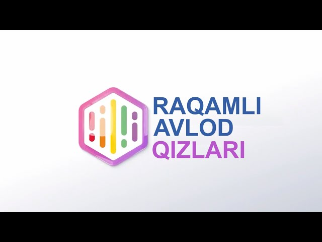
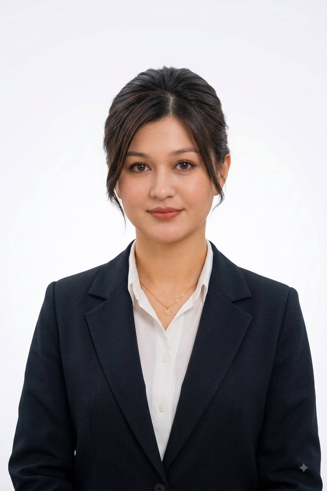

👩🏫- Ta'limda sun'iy intellekt va raqamli yechimlar
Tanlov ishtirokçisi va Matematika o‘qituvçisi
Maşaribova Layloxon
Men ushbu tanlovda o‘z kasbiy tajribam va zamonaviy texnologiyalarni birlashtirgan holda, ta'lim sifatini tubdan o‘zgartirishga qaratilgan innovatsion startap g‘oyamni taqdim etmoqdaman. Maqsadim – o‘quvçilarga sun'iy intellektdan nafaqat uy vazifasini bajarish, balki haqiqiy "ikkinçi ustoz" sifatida to‘g‘ri foydalanişni o‘rgatish va o‘qituvçilarning kundalik yuklamasini yengillashtirishdir.
Matematika o‘qituvçisi sifatida har kuni dars jarayonida duch keladigan va tizimli, raqamli yeçimni talab qiladigan dolzarb muammolar.
Hozirgi kunda o‘quvçilar uy vazifalarini mustaqil bajarish o‘rniga, sun'iy intellekt vositalariga shunchaki buyruq berib, tayyor javoblarni olishmoqda. Bu esa ularning mustaqil fikrlash qobiliyatini yo‘qotishiga va haqiqiy bilim o‘zlashtirmasdan, faqat qog‘ozda yuqori baho olishiga olib kelmoqda.
Matematika kabi aniq fanlarni o‘qitishda har bir o‘quvçining xatosini tahlil qilish, dars ishlanmalarini zamonaviy talablarga moslab tayyorlash va qog‘ozdagi testlarni tekshirish o‘qituvçidan haddan tışqari ko‘p vaqt va energiya talab qiladi.
An'anaviy, faqat doska va bo‘r bilan cheklangan usullar zamonaviy, raqamli muhitda o‘sgan o‘quvçilarni jalb qila olmayapti. Ular interaktiv, vizual va texnologiyaga asoslangan yondaşuvga muhtoj.
Sinfda 30-40 nafar o‘quvçi borligi sababli, har bir bolaning o‘zlashiiriş tezligi va qiyinchiliklariga qarab alohida yordam berish an'anaviy sharoitda deyarli imkonsiz holga kelgan.
Uşbu startap g‘oyasi "Raqamli avlod qizlari" tanlovining asosiy yo‘nalişlariga to‘liq javob beradi va amaliyotda sinovdan o‘tgan yondashuvlarga asoslangan.
Darsning 10-15 daqiqasini AI texnologiyalaridan to‘g‘ri foydalaniş qoidalariga bag‘işlaymiz. Biz AI'ni shunchaki javob beruvçi mexanizm emas, balki o‘quvçining xatolarini tushuntirib beradigan, mavzuni qayta tushuntiradigan şaxsiy raqamli yordamçi sifatida joriy etamiz.
"School_Helper" platformasi orqali test va nazorat işlari tizim tomonidan avtomatik tekşiriladi. Bu o‘qituvçiga qog‘ozbozlikdan xalos bo‘lishga va o‘z vaqtini faqat ijodiy hamda tushuntiriş jarayoniga sarflashga imkon beradi.
Platforma har bir o‘quvçining qaysi mavzuda (masalan, kasrlar yoki tenglamalar) qiynalayotganini tahlil qilib, o‘qituvçiga aniq tavsiyalar beradi va shu asosida individual topşiriqlar shakllantiradi.
Kundalik kichik yutuqlar va test natijalari uchun o‘quvçilarni maktab miqyosida rag‘batlantiriş tizimi joriy etiladi. Bu esa ularning darsga bo‘lgan ishtiyoqi va raqobatbardoshligini oşiradi.
Ta'lim sifatini oşiriş va o‘quv jarayonini takomillaştirişga xizmat qiluvçi, amaliyotga tadbiq etişga tayyor innovatsion işlanma.
O‘quvçilar o‘zlarining şaxsiy telefon, planshet yoki noutbuklari orqali platformada test va nazorat işlarini topşiradilar. Bu jarayon qog‘ozbozlikni butunlay yo‘qotadi va ekologik barqarorlikka hissa qo‘şadi.
O‘qituvçilar uçuñ darsni qiziqarli o‘tiş uçuñ kerakli o‘yinlar, interaktiv testlar va zamonaviy metodikalarni AI yordamida soniyalar içida yaratiş imkoniyati mavjud.
Ota-onalar va maktab ma'muriyati o‘quvçining o‘zlashiiriş dinamikasini, qaysi mavzularda yordamga muhtoj ekanligini real vaqtda kuzatib borishi mumkin.
Havola yangi oynada oçiladi • Bepul sıñab ko‘riñ
Tanlovning muhim sanalariga qat'iy rioya qilgan holda, ishtirokçi sifatida tuzilgan aniq yo'l xaritasi.
Loyiha konsepsiyasini yakunlaş, prototipni tayyorlaş va tanlovning rasmiy saytida o‘z ishtirokimni tasdiqlovçi ariza topşiriş.
Loyihani hakamlar hay'ati oldida ishonçli himoya qiliş, dasturiy ta'minotning ishlashini amaliy ko'rsatish va savollarga javob berish.
Hakamlar tanqidlarini inobatga olib, platformani yangilash va viloyat miqyosidagi bosqiçda o‘z g‘oyamni yanada kengroq taqdim etish.
Eng yaxşi startap ishtirokçisi sifatida e'tirof etiliş va g'oliblar uçuñ ajratilgan xorijiy ta'lim sayohatida faol ishtirok etiş.
"Men matematika o‘qituvçisi va tanlov ishtirokçisi sifatida ko‘ryapmanki, texnologiya bizni almashtirmaydi, aksinça, kuchaytiradi. Maqsadim – o‘quvçilarga AI'dan nafaqat uy vazifasini bajarish uçuñ, balki haqiqiy 'ikkinçi ustoz' sifatida foydalanişni o‘rgatishdir."
⚠️ Diqqat: Röyxatdan ötiş muddati 19-noyabrda yakunlanadi!
💻 Platformaga hoziroq kiriş